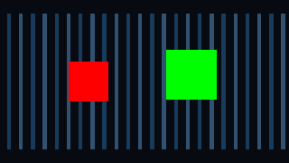

Tracefolio REPORTS & ISSUES
Tracefolio REPORTS & ISSUES선택 오브젝트 합성에서 일부 메시가 보이지 않던 문제
해결동일한 실제 렌더 검사에서 누락된 오브젝트가 다시 보이며 상태 복원도 통과했습니다.
작업 결과
선택 오브젝트 합성 셰이더의 _MainTex 속성을 선언했습니다. 실제 동일 장면 검사에서 빨간 오브젝트 픽셀이 0→1,936으로 복구됐습니다.
변경 내용
재현 조건
Unity 6000.0.83f1 · Windows · Built-in; URP17.0.4 RenderGraph 별도 회귀 검사
재현 순서
독립된 빨간/초록 불투명 루트에 4px/8px 크기를 지정하고 동일 카메라에서 선택 오브젝트 합성을 실행합니다.
기대 동작
양쪽 오브젝트가 원래 머티리얼과 각각의 픽셀 크기로 보여야 합니다.
실제 동작
수정 전에는 빨간 오브젝트 픽셀 수가 0이었고 Native QA가 실패했습니다.
원인
실제 셰이더/렌더 검사와 수정 전후 대조로 _MainTex Properties 선언 누락을 확인했습니다.
적용 내용
PixelCameraObjects.shader에 _MainTex 속성을 추가했습니다. 일반 머티리얼·원본 배경·렌더러 상태를 보존했습니다.
검증
수정 후 동일 Built-in 장면의 빨간 픽셀1,936·초록 픽셀3,080을 확인했습니다. 선택 오브젝트·깊이·윤곽선·복원 17개 검사와 URP17 RenderGraph 17개 검사가 통과했습니다.

남은 사항
투명 합성·사용자 정점 변형·HDRP·XR은 이 수정의 검증 범위 밖입니다. Affinity의 애니메이션 GIF 내보내기는 검증하지 못해 정지 전후 화면을 제공합니다.
작업 시간
- 제안 시간: 4개 제품 전체 작업 예산 최대10시간에 포함.
- 실제로 완료된 시간: 수정 후 Native 검사 완료 2026-11-02 02:57:06 KST. 전체 작업과 별도의 정확한 수정 착수 시간은 기록되지 않았습니다.
- XERJ: 사용 — 공통 Editor 검색에 XERJ를 사용했습니다. 해당 Runtime/Shader는 인덱스 범위 밖이므로 rg와 실제 Unity 렌더 검사를 사용했습니다.